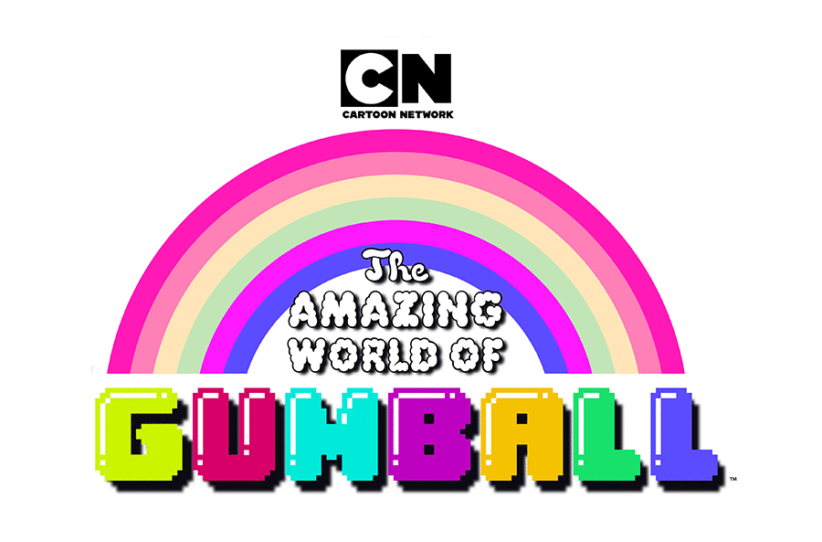
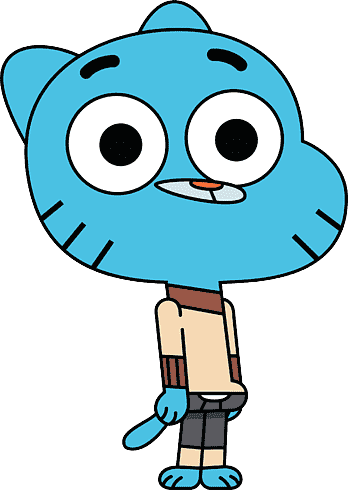
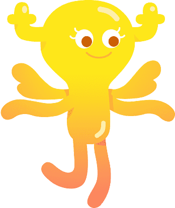

Es el protagonista de El increíble mundo de Gumball, un gato azul de 12 años caracterizado por su personalidad hiperactiva, sarcástica y propensa a generar situaciones caóticas. A pesar de su inmadurez y de los desastrosos resultados de sus planes, posee un trasfondo noble que se manifiesta con especial fuerza en el ámbito sentimental. Gumball profesa un amor profundo e incondicional hacia Penny, un sentimiento genuino que mitiga su habitual egoísmo y lo impulsa a superar su cobardía, mostrando una lealtad absoluta y una disposición total a protegerla ante cualquier adversidad.

Es un personaje clave de El increíble mundo de Gumball, caracterizada por su sensatez, empatía y su naturaleza como un hada cambiasformas emocional. Penny profesa un amor profundo y sincero hacia Gumball, aceptando incondicionalmente todas sus imperfecciones, torpezas y locuras. Su fuerte vínculo la impulsa a ser sumamente paciente y leal, convirtiéndose en el equilibrio perfecto para el caótico mundo de su pareja.